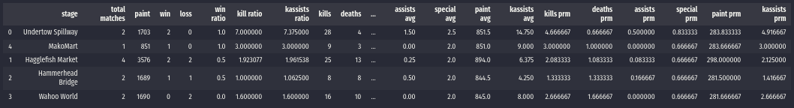

Pkg and Data Structures¶
SplatStats is mainly built upon the backbone of two main classes: Player and Battle. The Player one being a wrapper that contains information about battles for a single Splatoon id/name, whereas the Battle one contains the information of each match that has been extracted from a JSON file.
For a quick rundown on how to create player objects and how to do some basic analyses, have a look at our quickstart guide.
Player¶
Given a list of paths to serialized battle paths and a player name, this class extracts the information on the battles this player part in, and generates its structure automatically.
The class’ two main attributes are:
battlesRecordsThis list of objects contains the whole information of all the battles for the player (this includes allies and enemies stats).battlesHistoryThis dataframe contains the player’s information across all the battles he/she has been part of (an example screenshot follows).

The full list of current dataframe columns is:
'main weapon', 'sub weapon', 'special weapon', 'kill', 'death',
'assist', 'special', 'paint', 'head name', 'head main', 'head sub_0',
'head sub_1', 'head sub_2', 'shirt name', 'shirt main', 'shirt sub_0',
'shirt sub_1', 'shirt sub_2', 'shoes name', 'shoes main', 'shoes sub_0',
'shoes sub_1', 'shoes sub_2', 'win', 'score', 'datetime', 'ko', 'stage',
'match type', 'duration', 'splatfest', 'award_0', 'award_1', 'award_2'
This battlesHistory dataframe contains similar information to the one stored in the AlliedTeam/EnemyTeams dataframes in the Battle class, but with some of the class’ attributes added to the rows so that they can be analyzed easily (such as match type, date, score, etc).
Additionally, this class can auto-generate statistics for the player with the following functions:
calcPlayerStats()calcPlayerStatsByTypes()
For more information on attributes and methods for other analyses please have a look at its documentation page.
Battle¶
Ideally, we would access our be accessing our battle objects from within the Player class. To do this, we would run:
hPaths = splat.getDataFilepaths(IN_PATH, filePat='results.json')
bPaths = splat.dumpBattlesFromJSONS(OUT_PATH, oPath)
plyr = splat.Player(PLAYER_NAME, bPaths, timezone='America/Los_Angeles')
This will parse all the JSON files in the IN_PATH folder, convert them into Battle objects and serialize them to disk into the OUT_PATH folder; and the battle objects would be stored in the battlesRecords attribute of the plyr object.
Alternatively, individual battle files can be read with the following command:
battle = splat.loadBattle(filePath)
Some important attributes in these objects include:
datetime, duration, ko, matchType, matchMode, festMatch,
stage, awards, alliedTeam, enemyTeams
Most of them are pretty self-explanatory, but more information on them can be found on the class’ docs. In this guide, we will focus a bit more on the team dataframes.
The results of a team that was part of a battle are stored in a dataframe object which contains the following information:
player namePlayer’s name used in the matchplayer name idPlayer’s in-game idmain weaponMain weapon usedsub weaponSub weapon usedspecial weaponSpecial weapon usedkillKill countdeathDeath countassistNumber of assistsspecialNumber of specialspaintPainted surfacehead nameHeadgear’s namehead mainHeadgear’s main abilityhead sub_0Headgear’s sub ability @ slot 1head sub_1Headgear’s sub ability @ slot 2head sub_2Headgear’s sub ability @ slot 3shirt nameShirtgear’s nameshirt mainShirtgear’s main abilityshirt sub_0Shirtgear’s sub ability @ slot 1shirt sub_1Shirtgear’s sub ability @ slot 2shirt sub_2Shirtgear’s sub ability @ slot 3shoes nameShoesgear’s nameshoes mainShoesgear’s main abilityshoes sub_0Shoesgear’s sub ability @ slot 1shoes sub_1Shoesgear’s sub ability @ slot 2shoes sub_2Shoesgear’s sub ability @ slot 3selfIs this player the one who generated the dataset?winWin (W), Lose (L) or not finished (NA)scoreScore obtained in the match (if “Turf War”, this stat is “paint”; and if the match did not finish correctly the variable takes a value of False)
Just as a note, the enemyTeams object is returned as a list of dataframes to future-proof it for splatfest tri-turf battles. Each dataframe in the list contains the same columns as the alliedTeams one.
Finally, it is worth reiterating that even though the columns of the Battle object’s dataframe are fairly similar to the ones in the Player’s battleHistory one, the latter contains some additional columns like the datetime, ko, score, etc; that are originally attributes in the Battle object.
This is by design to avoid repeated information in the Battle object, but that is needed in analyzing a Player’s record.
Stats¶
SplatStats can automatically calculate the some statistics from either a player object, or from the battles stored in a battle dataframe. In general, calculated stats revolve around the following numbers:
K ills: Times you’ve splatted an enemy.
P aint: Amount of terrain painted.
A ssists: Times you’ve helped someone else splat an enemy.
D eaths: Times an enemy has splatted you.
S pecial: Times you’ve used your special.
With an additional metric called “kassists”, that combines kills and assists in a single number following this equation:
The output data structure follows this shape (either for the player, or the dataframe object):
{
'general': {
'total matches': Number of matches
'win': Wins out of total matches
'loss': Losses out of total matches
'paint': Total painted surface
'win ratio': Fraction of the matches that resulted in wins
'kill ratio': Number of kills divided by deaths
'kassists ratio': Number of kassists divided by deaths
},
'kpads': {
'kills': Total kills
'deaths': Total deaths
'assists': Total assists
'kassists': Total kassists
'special': Total specials used
'paint': Total painted surface
}
'kpads avg': {
'kills': Average kills per match
'deaths': Average deaths per match
'assists': Average assists per match
'kassists': Average kassists per match
'special': Average specials used per match
'paint': Average painted surface per match
}
'kpads per min': {
'kills': Kills per minute
'deaths': Deaths per minute
'assists': Assists per minute
'kassists': Kassists per minute
'special': Specials used per minute
'paint': Painted surface per minute
}
}
As stated in the structure’s entries descriptions, the average quantities are calculated on a “per match” basis; and the “per minute” stats are calculated by dividing the aggregate quantity over the total time spent in matches.
Stages Stats Dataframe¶
This structure is by calculating the stages stats from a battleHistory dataframe, which can be achieved by using either the splat.calcStagesStatsByType(battleHistory) or splat.calcStagesStats(battleHistory) functions.
Once done this, we can get the following information:
'stage', 'total matches', 'paint', 'win', 'loss', 'win ratio',
'kill ratio', 'kassists ratio', 'kills', 'deaths', 'assists', 'special',
'kassists', 'kills avg', 'deaths avg', 'assists avg', 'special avg',
'paint avg', 'kassists avg', 'kills prm', 'deaths prm', 'assists prm',
'special prm', 'paint prm', 'kassists prm'
Where each row will be a different stage (sorted by “win ratio” by default).
{kind=link}
Our demo file contains some examples and provides with an easy way to examine these structures!